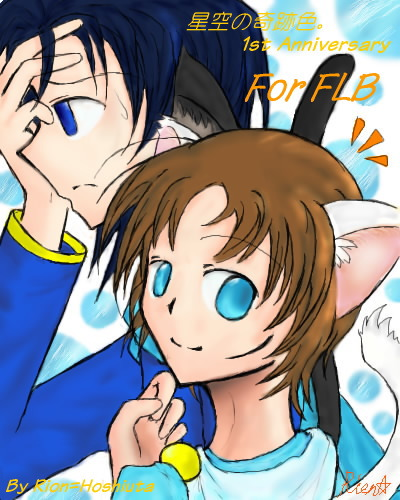

さて、そんな訳で。
もう募集は終わって、定員五枠も完全に埋まったはずの一周年記念の四勇者リクエストですが。
何故かまたまた更新がされております。
えっと、実は、リクエストの申請が、最後の二つ（５つめとコレ）は同日に届いてたんです。
ただ、ちょっと私自身のテスト接近による更新停滞や、その他モロモロの事情により、他の物よりも遅れてしまったのですが…！＞＜；
暖かい心遣い、どうもありがとうございましたです…！（私信）
改めまして、四勇者リクエスト第六段を、ここにお届けします！ｖ
リクエスト者はＦＬＢさん。
リクエストは、普通にクリスケとカーレッジ〜だったのです が。
…えーっと、ちょっと、頂いたメール文中のちょっとした比ゆ表現に管理人は目をつけてしまいまして。
一文だけ、引用。
（ＦＬＢさん、「ぇええ嫌だ困る！；」でしたら仰ってください＞＜；
すぐに文章取っ払いますんで、というか報告がこんな形でスイマセ…！）
＞カーレッジとクリスケはいっていればもう棒人間でも嬉しいです！
＞猫化していても大丈夫です！宇宙人化していてｍ（落ち着け
…猫化？良いんだな？猫化してても良いんだな！！？（普通ここは何でも良いのかと解釈するのでは）
オッケイ任せとけ！！四勇者リクエストにおいて不可能という文字は無いのだはぁーはっはっはーーーー！！
…とまあ、こんな感じで暴走。一気に描き上げ。
…うん、えっと。
これで裏日記の「個人的には猫よりも兎の方が〜」の意味がお分かりでしょうか。
………。
猫耳駄目な人は気をつけてね！！（すぱーん）
＊―――――――――――――＊――――――――――――＊
そらいろキャンディ 陽だまりのもと
つかのまの休息はいかがです？
たまにはのんびり まどろみながら
お昼寝を望むなら 貴方もこちらへいらっしゃい
「………星詩…。本当に寝たら直るんだろうな…？」
「だーいじょーぶ！バッチリ保障付き☆
ほらほら、君は普段から胃に穴空きそうな人なんだからたまに昼寝にでも勤しみたまえ。
神様もとい作者のくれた休息ってやつだね！」
「……いらない」
「酷っ…！；」
「ねー、里音、オイラは別にそんなに疲れてないと思うんだけど…？」
「…うん、細かいこと気にしちゃ駄目よクリスケ」
「でも、この耳としっぽ、ちゃんと元に戻るって分かってるから面白いかもね。
本物みたいにふわふわで気持ち良いし、オイラ先に寝ちゃおうかなあ」
「…順応制があって良いな、クリスケは…」
「…えー、そんな事ないよ？；」
「ほらほら、そんな事してないでお日様が沈む前に充分休んどきなさいって。
なんなら本当の猫相手みたいに耳の後ろ撫でてあげても良どげしっ。
お遊びとお昼寝は、ほどほどに。

星空の奇跡色。 １ｓｔ Ａｎｎｉｖｅｒｓａｒｙ
Ｒｅｑｕｅｓｔ ＴＨＡＮＫ Ｙｏｕ！
＊―――――――――――――＊――――――――――――＊
……何というか。
やっちゃったね。
…えーとすいませんゴメンナサイ。私が悪かったとちょっとだけは反省してます。
でもほら！クリスケはうさ耳の方が似合うよなぁと思いつつもちゃんと我慢して猫耳にしたから私頑張っｔ（略。
…えっと、すいません真面目に書きます。
そんな訳で、リクエスト第六段。
管理人の暴走もとい作者権限により、四勇者主人公二名に猫耳くっつけてみました。
残念ながら一眠りしてる間に元に戻ってしまうようですが、
その間にしっぽ掴むなり耳掴んでみるなり色々やってみましょう。（笑
…本物の猫相手にコレやると怒られますので要注意orz
しっぽ枕にしたからってひっかかなくても！（実話）
…あれ、そういえばこの状態の時って、やっぱり喉の下撫でたらゴロゴロ言うのかｎ（略。
ちなみに彼らの猫耳と猫しっぽですが。
カーレッジはロシアンブルー系の黒灰系統の猫だ！と案外すぐイメージが固まったんですが、
クリスケは茶トラとかの模様も似合うかなぁと色々迷ってました。
最終的には白猫になりましたが、…ちょっとすいませんよけい女々しくなってますよねorz
似合ってるから良いやと開き直ったのが原因だと思われます。…反省はしていませｎ（略。
とりあえず、本当に好き勝手やっちゃったのでとても楽しかったですが、
何故かは分かりませんがかなりの罪悪感があるんですけど（笑顔。
…く、苦情は２４時間受付中です！；
保存、転載はＦＬＢさんのみ可能です。
それではＦＬＢさん、リクエスト、どうもありがとうございましたーっ！ｖ
なんというか、本当こんな形ですいません（笑。
さて、これで約三ヶ月にも渡った四勇者リクエストも終了となります。
リクのうち約半数が裏行きという凄まじい事態にもなりましたが（笑/しかも残りは原版別館行き）
リクエストして下さった六名の皆様、本当にありがとうございました…！
自分じゃとても出来ないようなおふざけもいっぱいできてとても楽しかったです！ｖ（……）
…あ、四勇者本編。（いつものパターン
＊
星空の奇跡色。 １ｓｔ Ａｎｎｉｖｅｒｓａｒｙ
Ｔhank you Thank you very much for everyone！！ｖ
＊
２００６．１０．１０
星詩里音